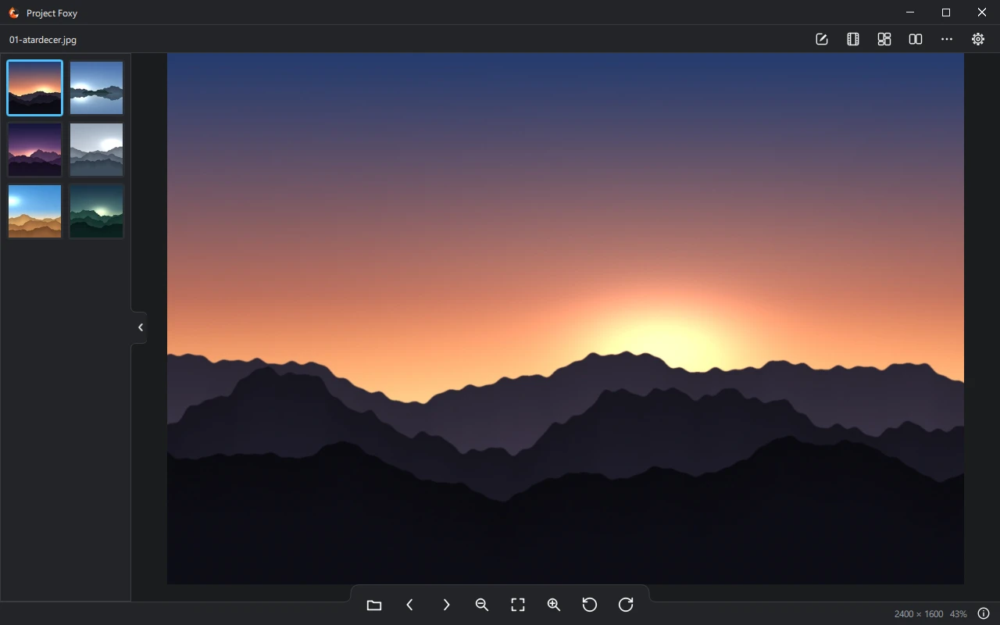

Visor veloz
Abre al instante JPEG, PNG, WebP, TIFF, HEIC, AVIF y RAW de cámara. Recorre la carpeta con miniaturas, zoom y desplazamiento por GPU, rotación, pantalla completa, información EXIF con histograma, fondo de escritorio y papelera.
Versión 0.2.6 · Windows y Linux · Gratis
Un visor de imágenes moderno, liviano y rápido, con un editor de fotos completo, creador de GIF, collage y comparador. Sin cuentas, sin nube, sin anuncios.
Windows 10/11 de 64 bits · instalador o portable

Abrís una foto y ya está. Cuando querés tocarla, el editor está a un clic.
Abre al instante JPEG, PNG, WebP, TIFF, HEIC, AVIF y RAW de cámara. Recorre la carpeta con miniaturas, zoom y desplazamiento por GPU, rotación, pantalla completa, información EXIF con histograma, fondo de escritorio y papelera.
Recorte, tamaño, 18 ajustes, niveles y curvas, 38 filtros, 43 efectos, corrección de lente y marcos. Deshacer y rehacer en todo.
Armá animaciones con duración, efecto y texto propios por imagen, y transiciones. Las animadas se reproducen de verdad.
De 1 a 12 fotos, divisorias ajustables o diseño libre, y plantillas propias que podés guardar.
De 2 a 10 imágenes lado a lado, acomodadas según su forma, con zoom y desplazamiento vinculados.
Las fotos Display P3 (iPhone) o AdobeRGB se convierten a sRGB al abrirlas: nada de colores apagados.
Escritura atómica: un fallo nunca deja tu original a medias. Conserva EXIF, IPTC y XMP, pide confirmación antes de sobrescribir, avisa de los cambios sin guardar y guarda en segundo plano sin congelar la ventana.
Español, English, Português, 한국어, 中文, 日本語. Cambian al instante, sin reiniciar. Temas claro, oscuro y dos estilo Windows 98.
Cuentagotas con Alt, leyenda de meme, exportación y renombrado por lote, zoom suavizado y nombres de archivo con cualquier carácter.
Capturas del programa real (versión 0.2.6).
Siete herramientas, cada una en su pestaña. La vista previa corre en la GPU y el archivo guardado usa la misma matemática, comprobada por pruebas automáticas.
Tiradores, proporciones, rotar, enderezar y voltear. Con Marco: rectángulo, elipse, hexágono, estrella, corazón…, esquinas redondas, suaves, cortadas o cóncavas, contorno, margen, sombra y fondo.
Por píxeles o escala, con remuestreo Lanczos-3 y nitidez sin halos al ampliar.
18 controles de tono, color y detalle; niveles y curvas por canal; automático; histograma en vivo; grano y ruido de 4 tipos.
38 «looks» con miniaturas de tu propia foto, cantidad, viñeta y grano.
43 efectos en 7 grupos —desenfoque, estilo, color, dibujo, luz, distorsión y acabado— con vista previa sobre toda la imagen, sliders, preajustes y mezcla.
Corrige distorsión, franjas de color y esquinas oscuras con la base de perfiles de Lensfun; reconoce cámara y objetivo por el EXIF, o se hace a mano.
GIF/APNG/WebP animados y collages, desde la barra superior.
JPEGPNGWebPTIFFBMPGIFICOHEIC / HEIFAVIFRAW de cámaraGIF · APNG · WebP animados
PNGJPGBMPTIFFWebP
GIFAPNGWebP animado
Última versión: 0.2.6 · notas de la versión
No pide permisos de administrador. Crea el acceso directo y, si querés, te deja en «Abrir con» y en Aplicaciones predeterminadas.
DescargarDescomprimí toda la carpeta y abrí ProjectFoxy.exe. Guarda su configuración al lado y no toca el registro.
DescargarSin instalar nada. Cualquier distribución de 64 bits con glibc 2.35 o más nueva, en X11 y Wayland.
Descargarchmod +x ProjectFoxy-*.AppImage
./ProjectFoxy-*.AppImage foto.jpgTrae su propio runtime: sirve en distribuciones viejas o muy distintas (Debian 11, Ubuntu 20.04, RHEL 8-9…).
Descargarflatpak install --user ProjectFoxy-*.flatpak
flatpak run io.github.vulob1.ProjectFoxyCada archivo trae su suma SHA-256 (SHA256SUMS.txt). Windows puede avisar «Windows protegió su PC» porque el programa todavía no está firmado: Más información → Ejecutar de todas formas.
Project Foxy se publica bajo la licencia GPL-3.0-or-later. Podés leer el código, compilarlo, proponer cambios o traducirlo a tu idioma.
No pide cuenta, no usa la nube y el programa no incluye nada que se conecte a internet para funcionar.
Sí, completamente, y seguirá siéndolo. Si te gusta podés ayudar con un aviso de error, una traducción o una mejora en GitHub.
Porque el programa todavía no tiene firma de código, algo que cuesta dinero cada año. Verificá la suma SHA-256 de la descarga y elegí «Más información → Ejecutar de todas formas».
Todavía no: hoy hay versiones para Windows 10/11 y Linux (AppImage y Flatpak).
Nunca sin avisarte: pide confirmación antes de sobrescribir y escribe el archivo de forma atómica, así que un fallo no lo deja a medias.
Se vio en una Radeon RX 6750 XT con Direct3D 11. Desde la 0.2.6 hay un ajuste «Sincronizar con la pantalla (V-Sync)»; apagarlo lo soluciona en ese caso.
Abrí un issue en GitHub (hay plantillas).